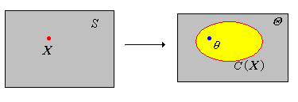
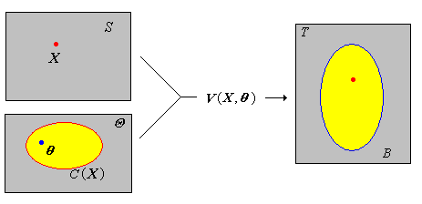

As usual, our starting point is a random experiment with an underlying sample space and a probability measure \(\P\). In the basic statistical model, we have an observable random variable \(\bs{X}\) taking values in a set \(S\). In general, \(\bs{X}\) can have quite a complicated structure. For example, if the experiment is to sample \(n\) objects from a population and record various measurements of interest, then \[ \bs{X} = (X_1, X_2, \ldots, X_n) \] where \(X_i\) is the vector of measurements for the \(i\)th object. The most important special case occurs when \((X_1, X_2, \ldots, X_n)\) are independent and identically distributed. In this case, we have a random sample of size \(n\) from the common distribution.
Suppose also that the distribution of \(\bs{X}\) depends on a parameter \(\theta\) with values in a set \(\Theta\). The parameter may also be vector-valued, in which case \(\Theta \subseteq \R^k\) for some \(k \in \N_+\) and the parameter vector has the form \(\bs{\theta} = (\theta_1, \theta_2, \ldots, \theta_k)\).
A confidence set is a subset \(C(\bs{X})\) of the parameter set \(\Theta\) that depends only on the data variable \(\bs{X}\), and no unknown parameters. the confidence level is the smallest probability that \(\theta \in C(\bs{X})\): \[ \min\left\{\P[\theta \in C(\bs{X})]: \theta \in \Theta\right\} \]
So in a sense, a confidence set is a set-valued statistic. A confidence set is an estimator of \(\theta\) in the sense that we hope that \(\theta \in C(\bs{X})\) with high probability, so that the confidence level is high. Note that since the distribution of \( \bs{X} \) depends on \( \theta \), there is a dependence on \( \theta \) in the probability measure \( \P \) in the definition of confidence level. However, we usually suppress this, just to keep the notation simple. Usually, we try to construct a confidence set for \(\theta\) with a prescribed confidence level \(1 - \alpha\) where \(0 \lt \alpha \lt 1\). Typical confidence levels are 0.9, 0.95, and 0.99. Sometimes the best we can do is to construct a confidence set whose confidence level is at least \(1 - \alpha\); this is called a conservative \(1 - \alpha\) confidence set for \(\theta\).

Suppose that \(C(\bs{X})\) is \(1 - \alpha\) level confidence set for a parameter \(\theta\). Note that when we run the experiment and observe the data \(\bs{x}\), the computed confidence set is \(C(\bs{x})\). The true value of \(\theta\) is either in this set, or is not, and we will usually never know. However, by the law of large numbers, if we were to repeat the confidence experiment over and over, the proportion of sets that contain \(\theta\) would converge to \(\P[\theta \in C(\bs{X})] = 1 - \alpha\). This is the precise meaning of the term confidence. In the usual terminology of statistics, the random set \(C(\bs{X})\) is the estimator; the deterministic set \(C(\bs{x})\) based on an observed value \(\bs{x}\) is the estimate.
Next, note that the quality of a confidence set, as an estimator of \(\theta\), is based on two factors: the confidence level and the precision as measured by the size
of the set. A good estimator has small size (and hence gives a precise estimate of \(\theta\)) and large confidence. However, for a given \(\bs{X}\), there is usually a tradeoff between confidence level and precision—increasing the confidence level comes only at the expense of increasing the size of the set, and decreasing the size of the set comes only at the expense of decreasing the confidence level. How we measure the size
of the confidence set depends on the dimension of the parameter space and the nature of the confidence set. Moreover, the size of the set is usually random, although in some special cases it may be deterministic.
Considering the extreme cases may give us some insight. First, suppose that \(C(\bs{X}) = \Theta\). This set estimator has maximum confidence 1, but no precision and hence it is worthless (we already knew that \(\theta \in \Theta\)). At the other extreme, suppose that \(C(\bs{X})\) is a singleton set. This set estimator has the best possible precision, but typically for continuous distributions, would have confidence 0. In between these extremes, hopefully, are set estimators that have high confidence and high precision.
Suppose that \(C_i(\bs{X})\) is a \(1 - \alpha_i\) level confidence set for \(\theta\) for \(i \in \{1, 2, \ldots, k\}\). If \(\alpha = \alpha_1 + \alpha_2 + \cdots + \alpha_k \lt 1\) then \(C_1(\bs{X}) \cap C_2(\bs{X}) \cap \cdots \cap C_k(\bs{X})\) is a conservative \(1 - \alpha \) level confidence set for \(\theta\).
This follows from Bonferroni's inequality.
In many cases, we are interested in estimating a real-valued parameter \(\lambda = \lambda(\theta)\) with values in an interval \((a, b)\), where \(a, \, b \in \R\) with \(a \lt b\). Of course, it's possible that \(a = -\infty\) or \(b = \infty\). In this context our confidence set frequently has the form \[ C(\bs{X}) = \left\{\theta \in \Theta: L(\bs{X}) \lt \lambda(\theta) \lt U(\bs{X})\right\} \] where \(L(\bs{X})\) and \(U(\bs{X})\) are real-valued statistics. In this case \((L(\bs{X}), U(\bs{X}))\) is called a confidence interval for \(\lambda\). If \(L(\bs{X})\) and \(U(\bs{X})\) are both random, then the confidence interval is often said to be two-sided. In the special case that \(U(\bs{X}) = b\), \(L(\bs{X})\) is called a confidence lower bound for \(\lambda\). In the special case that \(L(\bs{X}) = a\), \(U(\bs{X})\) is called a confidence upper bound for \(\lambda\).
Suppose that \(L(\bs{X})\) is a \(1 - \alpha\) level confidence lower bound for \(\lambda\) and that \(U(\bs{X})\) is a \(1 - \beta\) level confidence upper bound for \(\lambda\). If \(\alpha + \beta \lt 1\) then \((L(\bs{X}), U(\bs{X}))\) is a conservative \(1 - (\alpha + \beta)\) level confidence interval for \(\lambda\).
You might think that it should be very difficult to construct confidence sets for a parameter \(\theta\). However, in many important special cases, confidence sets can be constructed easily from certain random variables known as pivot variables.
Suppose that \(V\) is a function from \(S \times \Theta\) into a set \(T\). The random variable \(V(\bs{X}, \theta)\) is a pivot variable for \(\theta\) if its distribution does not depend on \(\theta\). Specifically, \(\P[V(\bs{X}, \theta) \in B]\) is constant in \(\theta \in \Theta\) for each \(B \subseteq T\).
The basic idea is that we try to combine \(\bs{X}\) and \(\theta\) algebraically in such a way that we factor out the dependence on \(\theta\) in the distribution of the resulting random variable \(V(\bs{X}, \theta)\). If we know the distribution of the pivot variable, then for a given \(\alpha\), we can try to find \(B \subseteq T\) (that does not depend on \(\theta\)) such that \( \P_\theta\left[V(\bs{X}, \theta) \in B\right] = 1 - \alpha \). It then follows that a \(1 - \alpha\) confidence set for the parameter is given by \( C(\bs{X}) = \{ \theta \in \Theta: V(\bs{X}, \theta) \in B \} \).

Suppose now that our pivot variable \(V(\bs{X}, \theta)\) is real-valued, which for simplicity, we will assume has a continuous distribution. For \(p \in (0, 1)\), let \(v(p)\) denote the quantile of order \(p\) for the pivot variable \(V(\bs{X}, \theta)\). By the very meaning of pivot variable, \(v(p)\) does not depend on \(\theta\).
For any \(p \in (0, 1)\), a \(1 - \alpha\) level confidence set for \(\theta\) is \[ \left\{\theta \in \Theta: v(\alpha - p \alpha) \lt V(\bs{X}, \theta) \lt v(1 - p \alpha)\right\} \]
By definition, the probability of the event is \((1 - p \alpha) - (\alpha - p \alpha) = 1 - \alpha\).
The confidence set above corresponds to \((1 - p) \alpha\) in the left tail and \(p \alpha\) in the right tail, in terms of the distribution of the pivot variable \(V(\bs{X}, \lambda)\). The special case \(p = \frac{1}{2}\) is the equal-tailed case, the most common case.
The confidence set is decreasing in \(\alpha\) and hence increasing in \(1 - \alpha\) (in the sense of the subset relation) for fixed \(p\).
For the confidence set , we would naturally like to choose \(p\) that minimizes the size of the set in some sense. However this is often a difficult problem. The equal-tailed interval, corresponding to \(p = \frac{1}{2}\), is the most commonly used case, and is sometimes (but not always) an optimal choice. Pivot variables are far from unique; the challenge is to find a pivot variable whose distribution is known and which gives tight bounds on the parameter (high precision).
Suppose that \(V(\bs{X}, \theta)\) is a pivot variable for \(\theta\). If \(g\) is a function defined on the range of \(V\) and \(g\) involves no unknown parameters, then \(U = g[V(\bs{X}, \theta)]\) is also a pivot variable for \(\theta\).
In the case of location-scale families of distributions, we can easily find pivot variables. Suppose that \(Z\) is a real-valued random variable with a continuous distribution that has probability density function \(g\), and no unknown parameters. Let \(X = \mu + \sigma Z\) where \(\mu \in \R\) and \(\sigma \in (0, \infty)\) are parameters. Recall that the probability density function of \(X\) is given by \[ f_{\mu, \sigma}(x) = \frac{1}{\sigma} g\left( \frac{x - \mu}{\sigma} \right), \quad x \in \R\] and the corresponding family of distributions is called the location-scale family associated with the distribution of \(Z\); \(\mu\) is the location parameter and \(\sigma\) is the scale parameter. Generally, we are assuming that these parameters are unknown.
Now suppose that \(\bs{X} = (X_1, X_2, \ldots, X_n)\) is a random sample of size \(n\) from the distribution of \(X\); this is our observable outcome vector. For each \(i\), let \[ Z_i = \frac{X_i - \mu}{\sigma} \]
The random vector \(\bs{Z} = (Z_1, Z_2, \ldots, Z_n)\) is a random sample of size \(n\) from the distribution of \(Z\).
In particular, note that \(\bs{Z}\) is a pivot variable for \((\mu, \sigma)\), since \(\bs{Z}\) is a function of \(\bs{X}\), \(\mu\), and \(\sigma\), but the distribution of \(\bs{Z}\) does not depend on \(\mu\) or \(\sigma\). Hence, any function of \(\bs{Z}\) will also be a pivot variable for \((\mu, \sigma)\), (if the function does not involve the parameters). Of course, some of these pivot variables will be much more useful than others in estimating \(\mu\) and \(\sigma\). In the following exercises, we will explore two common and important pivot variables.
Let \(M(\bs{X})\) and \(M(\bs{Z})\) denote the sample means of \(\bs{X}\) and \(\bs{Z}\), respectively. Then \(M(\bs{Z})\) is a pivot variable for \((\mu, \sigma)\) since \[ M(\bs{Z}) = \frac{M(\bs{X}) - \mu}{\sigma} \]
Let \(m\) denote the quantile function of the pivot variable \(M(\bs{Z})\). For any \(p \in (0, 1)\), a \(1 - \alpha\) confidence set for \((\mu, \sigma)\) is \[ Z_{\alpha, p}(\bs{X}) = \{(\mu, \sigma): M(\bs{X}) - m(1 - p \alpha) \sigma \lt \mu \lt M(\bs{X}) - m(\alpha - p \alpha) \sigma \} \]
The confidence set constructed in is a cone
in the \((\mu, \sigma)\) parameter space, with vertex at \( (M(\bs{X}), 0) \) and boundary lines of slopes \(-1 / m(1 - p \alpha)\) and \(-1 / m(\alpha - p \alpha)\), as shown in the graph below. (Note, however, that both slopes might be negative or both positive.)

The fact that the confidence set is unbounded is clearly not good, but is perhaps not surprising; we are estimating two real parameters with a single real-valued pivot variable. However, if \(\sigma\) is known, the confidence set defines a confidence interval for \(\mu\). Geometrically, the confidence interval simply corresponds to the horizontal cross section at \(\sigma\).
\(1 - \alpha\) confidence sets for \((\mu, \sigma)\) are
If \(\sigma\) is known, then (a) gives a \(1 - \alpha\) confidence lower bound for \(\mu\) and (b) gives a \(1 - \alpha\) confidence upper bound for \(\mu\).
Let \(S(\bs{X})\) and \(S(\bs{Z})\) denote the sample standard deviations of \(\bs{X}\) and \(\bs{Z}\), respectively. Then \(S(\bs{Z})\) is a pivot variable for \((\mu, \sigma)\) and a pivot variable for \(\sigma\) since \[ S(\bs{Z}) = \frac{S(\bs{X})}{\sigma} \]
Let \(s\) denote the quantile function of \(S(\bs{Z})\). For any \(\alpha \in (0, 1)\) and \(p \in (0, 1)\), a \(1 - \alpha\) confidence set for \((\mu, \sigma)\) is \[ V_{\alpha, p}(\bs{X}) = \left\{(\mu, \sigma): \frac{S(\bs{X})}{s(1 - p \alpha)} \lt \sigma \lt \frac{S(\bs{X})}{s(\alpha - p \alpha)} \right\} \]
Note that the confidence set gives no information about \(\mu\) since the random variable above is a pivot variable for \(\sigma\) alone. The confidence set can also be viewed as a bounded confidence interval for \(\sigma\).

\(1 - \alpha\) confidence sets for \((\mu, \sigma)\) are
In the confidence set constructed above, let \(p \uparrow 1\) and \(p \downarrow 0\), respectively.
The set in part (a) gives a \(1 - \alpha\) confidence lower bound for \(\sigma\) and the set in part (b) gives a \(1 - \alpha\) confidence upper bound for \(\sigma\).
We can intersect the confidence sets corresponding to the two pivot variables to produce conservative, bounded confidence sets.
If \(\alpha, \; \beta, \; p, \; q \in (0, 1)\) with \(\alpha + \beta \lt 1\) then \(Z_{\alpha, p} \cap V_{\beta, q}\) is a conservative \(1 - (\alpha + \beta)\) confidence set for \((\mu, \sigma)\).

The most important location-scale family is the family of normal distributions. The problem of estimation in the normal model is considered in the next section. In the remainder of this section, we will explore another important scale family.
Recall that the exponential distribution with scale parameter \(\sigma \in (0, \infty)\) has probability density function \(f(x) = \frac{1}{\sigma} e^{-x / \sigma}, \; x \in [0, \infty)\). It is the scale family associated with the standard exponential distribution, which has probability density function \(g(x) = e^{-x}, \; x \in [0, \infty)\). The exponential distribution is widely used to model random times (such as lifetimes and arrival
times), particularly in the context of the Poisson model. Now suppose that \(\bs{X} = (X_1, X_2, \ldots, X_n)\) is a random sample of size \(n\) from the exponential distribution with unknown scale parameter \(\sigma\). Let
\[ Y = \sum_{i=1}^n X_i \]
The random variable \(\frac{2}{\sigma} Y\) has the chi-square distribution with \(2 n\) degrees of freedom, and hence is a pivot variable for \(\sigma\).
Note that this pivot variable is a multiple of the variable \( M \) constructed above for general location-scale families (with \(\mu = 0\)). For \(p \in (0, 1)\) and \(k \in (0, \infty)\), let \(\chi_k^2(p)\) denote the quantile of order \(p\) for the chi-square distribution with \(k\) degrees of freedom. For selected values of \(k\) and \(p\), \(\chi_k^2(p)\) can be obtained from the quantile app or from most statistical software packages.
Recall that
For any \(\alpha \in (0, 1)\) and any \(p \in (0, 1)\), a \(1 - \alpha\) confidence interval for \(\sigma\) is \[ \left( \frac{2\,Y}{\chi_{2n}^2(1 - p \alpha)}, \frac{2\,Y}{\chi_{2n}^2(\alpha - p \alpha)} \right) \]
Note that
Of the two-sided confidence intervals constructed above, we would naturally prefer the one with the smallest length, because this interval gives the most information about the parameter \(\sigma\). However, minimizing the length as a function of \(p\) is computationally difficult. The two-sided confidence interval that is typically used is the equal tailed interval obtained by letting \(p = \frac{1}{2}\): \[ \left( \frac{2\,Y}{\chi_{2n}^2(1 - \alpha/2)}, \frac{2\,Y}{\chi_{2n}^2(\alpha/2)} \right) \]
The lifetime of a certain type of component (in hours) has an exponential distribution with unknown scale parameter \(\sigma\). Ten devices are operated until failure; the lifetimes are 592, 861, 1470, 2412, 335, 3485, 736, 758, 530, 1961.